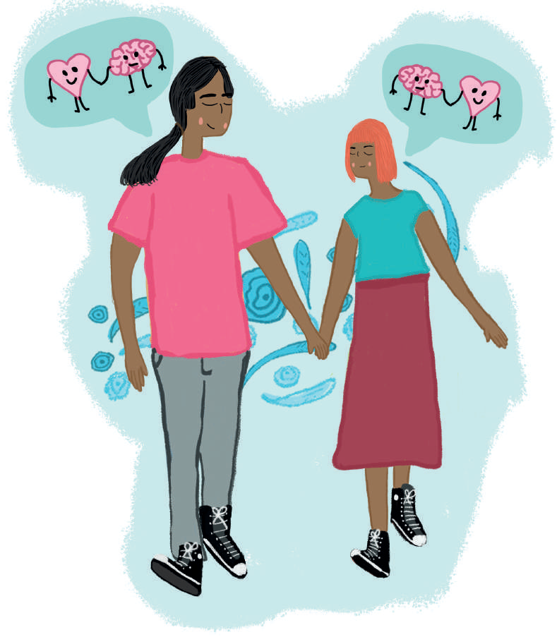

Resolución de problemas:
las parejas pueden aprender a resolver problemas e identificar soluciones nuevas, dividiendo un problema en partes pequeñas o hablando acerca de la situación.
las parejas pueden aprender a resolver problemas e identificar soluciones nuevas, dividiendo un problema en partes pequeñas o hablando acerca de la situación.